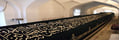
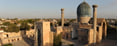

| Вақт | Фаолият | Расм |
|---|---|---|
| 06:00 | Бухорога етиб келиш ва Темир йул вокзалидан автобусларга чикиб, Етти Пир зиёратига жунаш ( Нонушта-Lunch Box) | |
| 7:00-7:30 | Абдухолиқ Ғиждувоний зиёрати | |
| 08:00-08:30 | Хўжа Ориф Ар-Ревгарий зиёрати | |
| 09:00-09:30 | Махмуд Анжир Фағнавий зиёрати | |
| 10:00-10:30 | Хўжа Али Ромитаний зиёрати | |
| 11:00-11:30 | Муҳаммад Бобои Самосий зиёрати | |
| 12:00-13:00 | Тушлик (Палов) | |
| 13:30-14:00 | Саййид Амир Кулол зиёрати | |
| 14:10-15:30 | Баҳоуддин Нақшбанд зиёрати | |
| 16:00-18:00 | “Арк” қўрғони, “Пойи Калон” мажмуаси,Савдо мажмуалари ва “Лаби Ҳовуз” мажмуаси тарихи билан танишиб чиқиш | |
| 18:10-19:30 | Бухорода Мехмонхонага жойлашиш ва Кечки овқат |
| Вақт | Фаолият | Расм |
|---|---|---|
| 07:00-07:30 | Мехмонхонада эрталабги нонушта ва Бухоро бўйлаб саёхатни давом еттириш | |
| Ситораи Мохи-Хоссага ташриф ва Бухородан Самарқандга жўнаш | ||
| Самарқандга етиб келиш, Йул-йулакай Имом Ал-Бухорий мақбарасига ташриф | ||
| Тушлик | ||
| Регистон мажмуасига ташриф | ||
| Шохи Зиндага ташриф (пиёда) | ||
| Ислом Каримов ёдгорлик мажмуасини зиёрат қилиш | ||
| Самарқандда Мехмонхонага жойлашиш ва кечки овқат |
| Вақт | Фаолият | Расм |
|---|---|---|
| Мехмонхонада нонушта ва Самарқанд бўйлаб саёхатни давом еттириш | ||
| Бибихоним масжидига ташриф |  | |
| Амир Темур мақбарасига ташриф |  | |
| Тушлик | ||
| Сиёб бозорида айланиш (пиёда) | ||
| Самарқанддан поездларга миниб, Тошкент шахрига жунаб кетиш |
Буюк келажагимизни мард ва олижаноб халқимиз билан бирга
қурамиз!
— Ш.М. Мирзиёев